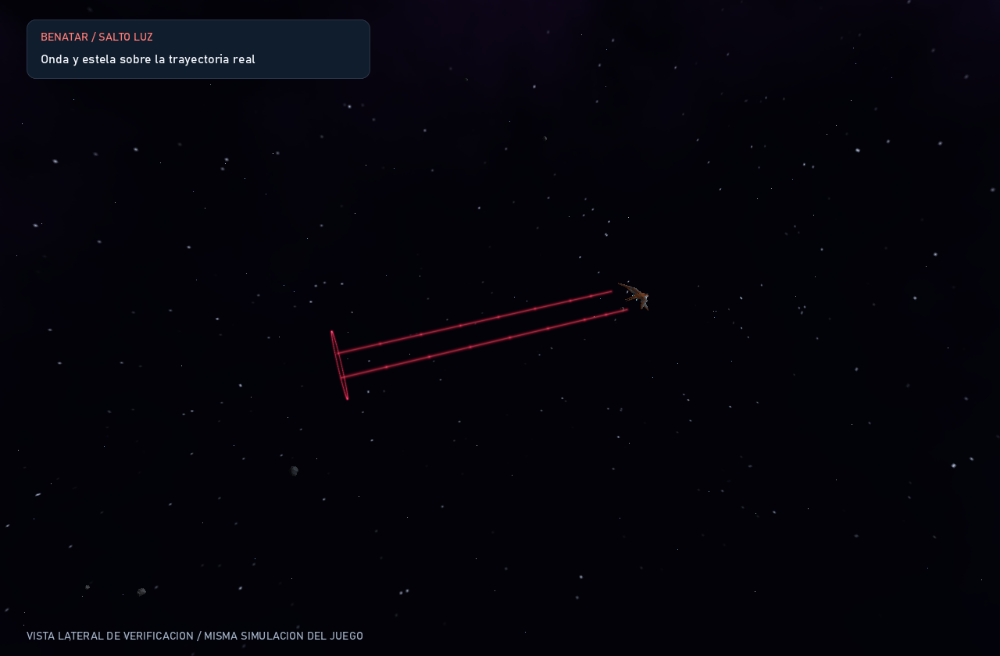
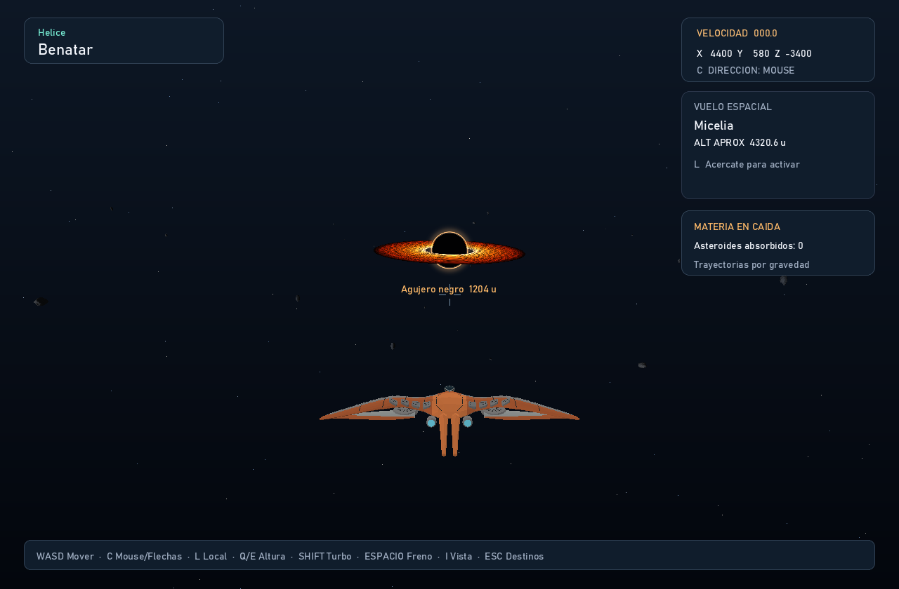

Un sol gigante de radio 320 ilumina los mundos de Hélice. Cada planeta recorre su propia órbita, con distinta velocidad e inclinación. El relieve, las colisiones y el vuelo local acompañan ese movimiento.
Ver las siete órbitas
Distancia al centro de Aureon, en unidades del juego
Hongos gigantes nacen entre cordilleras violetas. En las cuencas de impacto, el micelio esmeralda encuentra refugio; bajo los sombreros, las esporas conservan su luz.
Relieve
Crestas orgánicas
Cuencas de impacto
5
Hongos gigantes
58
Acércate en vuelo y pulsa L para recorrer su horizonte.
Una corteza de azufre amarillo se pliega en largas cordilleras. Siete calderas interrumpen el paisaje, con paredes elevadas, estratos ocres y lagos ácidos en su interior.
Relieve
Cordilleras sulfurosas
Calderas
7
Lagos ácidos
7
Desciende con Q en navegación local para apreciar las paredes.
Montañas de cobre, óxido rojizo y vetas de cardenillo. Sus cráteres tienen bordes concéntricos y un pico central de rebote: cicatrices que se reconocen incluso desde el espacio.
Relieve
Estratos metálicos
Cráteres
8
Seña distintiva
Anillos de impacto
Sube con E para descubrir el perfil de las cordilleras.
Los siete planetas rodean a Aureon en órbitas separadas. Acércate a un mundo y pulsa L para seguir su horizonte mientras se desplaza.
Benatar, un salto en rojo
CAPS LOCK / SALTO LUZ
El salto ahora pertenece a Benatar, la primera nave. Pulsa Caps Lock para saltar hacia adelante o combínalo con WASD para elegir la dirección. TIE Silencer conserva la Estrella de la Muerte con R.
Se eliminaron las líneas adicionales del fondo y el estiramiento exagerado de las estrellas. La onda roja queda en el punto de salida y la estela sigue el recorrido real de la nave.

SalidaSaltoEstelaListoDesvanecida
Recorre cinco capturas reales del motor Rust con el control o las flechas del teclado. El encuadre lateral permite observar la onda y cómo la estela queda atrás y se desvanece. En el juego se conserva la cámara de seguimiento.
El salto dura 3 segundos y no tiene recarga: al terminar puedes volver a activarlo inmediatamente. Conserva las colisiones y la navegación local. Esta página muestra capturas del juego para escritorio.
La materia también cae
OBSERVATORIO / AGUJERO NEGRO
El agujero negro está lejos del sistema planetario. Todas las rocas libres sienten su atracción; las rocas de los anillos de Umbriel también acumulan una deriva gravitatoria. Al cruzar el horizonte, una roca desaparece y deja de bloquear a la nave.

0 s10 s20 s30 s40 s
Mueve el control para comparar cinco capturas reales, tomadas desde la misma posición. El contador del juego muestra cuántos asteroides han sido absorbidos.
PREPARA TU NAVE
Tu próxima parada: Hélice.
Ejecuta el juego de escritorio, elige tu nave y selecciona Hélice en el mapa de destinos.
cargo run --release
ESTA PÁGINA ES LA GALERÍA DEL JUEGO PARA ESCRITORIO.